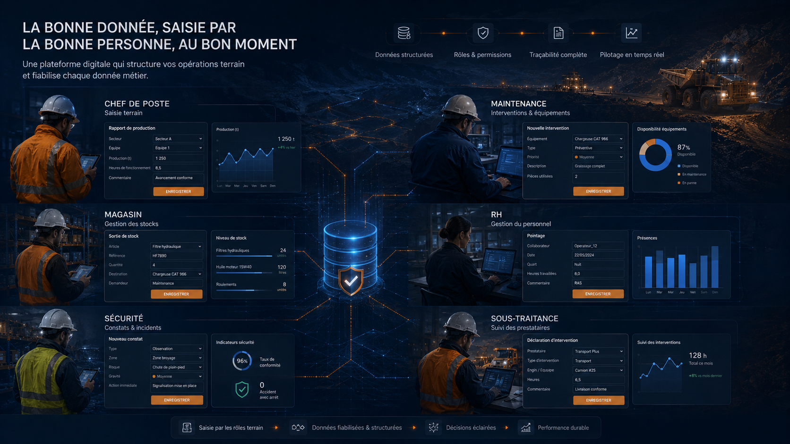

Chef de poste
Déclarer le réalisé, les écarts, incidents, priorités et informations utiles au passage de consigne.
- Production réalisée
- Arrêts ou anomalies
- Commentaires opérationnels
Digitalisation terrain
Chaque utilisateur accède à des interfaces adaptées à son rôle : chef de poste, maintenance, magasin, RH, sécurité, sous-traitance et Direction.
Saisie terrain par rôle
Chef de poste, Maintenance, Magasin, RH, Sécurité et Sous-traitance peuvent disposer d’écrans ciblés pour remonter une donnée plus fiable, plus lisible et mieux contrôlée.
Exemple de digitalisation des saisies terrain par rôle — démonstration visuelle anonymisée.

Principe
La digitalisation terrain vise à réduire les erreurs de saisie, éviter les ressaisies, guider les utilisateurs et alimenter les KPI avec des données plus propres, contrôlées et traçables.
Déclarer le réalisé, les écarts, incidents, priorités et informations utiles au passage de consigne.
Suivre les demandes, interventions, équipements concernés, causes et statuts de résolution.
Fiabiliser les mouvements, demandes internes, niveaux critiques et validations de sortie.
Structurer les informations de présence, affectation, disponibilité et pointage des équipes.
Centraliser les événements, observations terrain, actions correctives et contrôles de prévention.
Suivre les interventions externes, validations terrain, réserves et niveaux de conformité.
Qualité & gouvernance
Les interfaces par rôle ne servent pas seulement à saisir plus vite : elles cadrent la donnée pour éviter les oublis, les doublons et les interprétations différentes.
Terrain
Un diagnostic permet d’identifier les rôles, les données critiques et les premiers écrans à digitaliser.